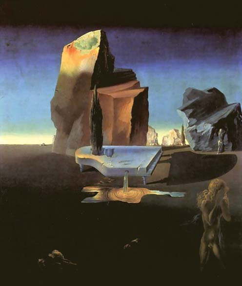
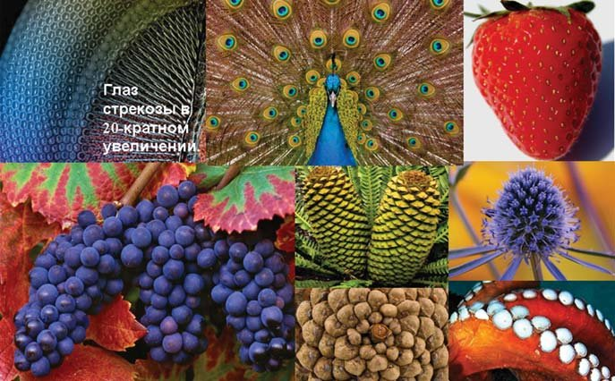
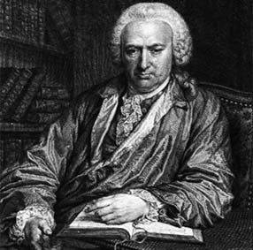
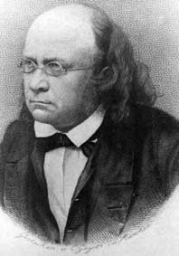
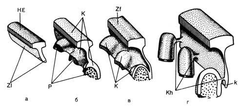
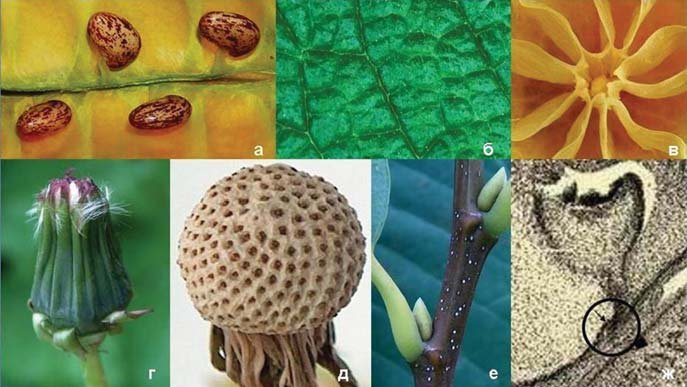
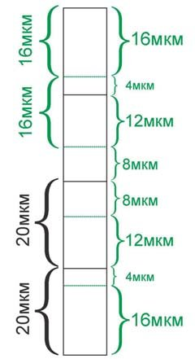

Точка зору · журнал «ДентАрт» 2015 №2
Філотаксис і біомеханіка зубів. Частина III
PHYLLOTAXIS AND BIOMECHANICS OF TEETH. PART III
Частину I читайте в «ДентАрті» №2/2013, частину II — у «ДентАрті» №4/2013. Частину IV — закінчення статті — читайте у «ДентАрті» №3/2015.
«Наука, якщо вона хоче бути оновленою, повинна бути, передусім, необмеженою і тим самим безстрашною. Будь-яке умовне обмеження вже буде свідченням убогості, а тим самим стане непереборною перешкодою на шляху досягнення».
М. К. Реріх
За нашою гіпотезою, викладеною в статті «Фрактальна організація в природі та зубощелепній системі людини на основі спіральної симетрії» («ДентАрт» №4, 2009), утворення багатогорбкових зубів у філо- та онтогенезі відбувалося шляхом злиття простіших конічних форм, підкоряючись певним законам формоутворення в природі, одним з яких є спіральна біосиметрія. Великий російський природознавець, філософ, соціолог М. Я. Данилевський (1822-1885) був переконаний, що «підпорядкування математичним правилам не могло б виникнути у світі, якби він розвивався за законами дарвінівського вчення». Очевидно, механізм цього складного перетворення форми набагато складніший, ніж нам видається, і потребує подальшого глибокого вивчення із залученням не лише досконаліших методів досліджень, а й фахівців з інших галузей наук (біологів, генетиків, фізиків, математиків та ін.) (рис. 1).
Автор теорії автоеволюції генетик Ліма-де-Фаріа стверджує, що форми і функції в біоструктурах не були створені генами і хромосомами, а живий зв'язок з початком світу слід шукати на еволюційних рівнях, які передували біологічній еволюції і залишили свої фізичні, хімічні та кристалографічні «відбитки» в останній. Філотаксис як феномен керується генетичними факторами лише опосередковано. Д. Каплан, В. Хагеман (1991) дотримуються тих самих поглядів, що й А. Черч (1920) багато десятиліть тому, дійшовши висновку, що пояснити механізм філотаксису з позиції клітинних теорій неможливо, оскільки цей процес породжений якоюсь невидимою причиною. Клітини — це лише маркери росту, а зовсім не джерела морфогенезу.
На сьогодні відомо близько 30 філотаксисних гіпотез. На думку деяких авторів, жодна з них не дає чіткого пояснення, але теорія фізіологічного поля С. Уордлоу (1949) вважається найправдоподібнішою гіпотезою, здатною пояснити розміщення листкових примордіїв у гвинтовому (спіральному) філотаксисі. Професор математики з Канади Роджер В. Джан (2006) вважає, що якщо ми хочемо знайти краще пояснення «містичним» властивостям філотаксису, то нам необхідно враховувати основоположні властивості простору і часу, зумовлені еволюцією елементарних частинок, хімічних елементів і мінералів. Закони простору і часу відіграють визначальну роль у формуванні структури й упорядкуванні матерії та енергії. Суттєво наблизитися до розуміння тісного взаємозв'язку не пов'язаних між собою, як здасться на перший погляд, понять допоможуть загальні закони природи і структура Всесвіту. «Філотаксис, будучи проявом життя, не відкриє нам своїх таємниць, якщо ми не вирвемося, нарешті, за межі замкнених орбіт мислення», — вважає Р. В. Джан.

Рис. 1. Сальвадор Далі. Загадкові джерела гармонії (1934). «Світ за своєю природою не тільки художній твір, а й художник… Усі елементи світобудови гармонійно пов'язані між собою… Немає нічого більш упорядкованого, ніж природа, яка щодня сама нагадує нам, у скількох небагатьох, у скількох малих речах вона потребує». (Марк Туллій Цицерон, 106-43 рр. до н. е.)
Необхідно зазначити, що на зорі науки про опір і пружність матеріалів встановлення основних положень цих дисциплін було тісно пов'язане з розглядом конструкційних особливостей рослин (і почасти скелета тварин). Засновником науки про опір матеріалів вважається великий учений Г. Галілей (1638), а пружності матеріалів — англійський природознавець, учений-енциклопедист Р. Гук (1635-1703). Гук експериментально обґрунтував своє теоретичне положення про пропорційність між пружними розтягуваннями, стисканнями і згинаннями та напруженнями, що їх викликають (закон Гука, 1660). Р. Гук детально вивчав мікроскопічну будову рослин і найдрібніші деталі живих організмів, уперше запровадив уявлення про їхню клітинну будову (термін «клітина» був уведений Гуком 1665 року). Ще природознавці XVIII століття займалися питаннями про те, чи немає в тілі рослин аналогів кістковому скелету тварин. Так, наприклад, Ф. Шранк (1875) вважав, що «деревні волокна можна, звісно, порівняти з кістковими волокнами тварин, а клітинну тканину — з їхнім м'ясом; і в цьому відношенні більшість дерев має схожість із ссавцями, амфібіями, рибами і птахами».
Крім розробки новітніх типів матеріалів, учені постійно повідомляють про технологічні відкриття, які найчастіше базуються на «інтелектуальному потенціалі» природи, а її можливості здаються нам невичерпними, і лише мала дещиця секретів з її майстерні стала доступною розумінню людини. Як одного разу влучно висловився відомий британський письменник Дж. Бернард Шоу, «життя — це сила, яка здійснює незліченну кількість експериментів, намагаючись організувати себе», і не викликає сумніву існування в природі всезагальних керуючих принципів. Повільна еволюція організмів, можливо, відображає дію потужного стабілізувального відбору, що підтримує вдалі морфологічні адаптації. Багато, а можливо і більшість видів зберігають стабільну морфологію протягом дуже великої частини своєї історії. Розглядаючи проблему співвідношення форми і функції, відомий біолог О. О. Любищев ще 1925 року стверджував: «Є підстави вважати, що структури лише в окремих випадках визначаються виконуваними функціями, а в загальнішому випадку підкоряються деяким математичним законам гармонії. У розмаїтті форм є своя, не залежна від функції впорядкованість». Дослідження наступних років лише підтвердили точку зору, що першорядне значення мають єдині закони біологічного морфогенезу, які описуються простими математичними співвідношеннями, часто пов'язаними із «золотою пропорцією» і «числами Фібоначчі».
Продовжуючи тему філотаксису, необхідно зазначити, що президент Міжнародного клубу «Золотий Перетин», український учений, професор О. П. Стахов (2006) вважає, що «Закони Гармонії Природи» об'єктивні і відображають прагнення природних структур до «оптимізації», «доцільності», економії речовини й енергії.
О. П. Стахов дотримується думки, що саме геніальний астроном Йоганн Кеплер (1571-1630) першим звернув увагу на ботанічну закономірність філотаксису. У XIX столітті філотаксис почали розглядати як загадку живої природи (рис. 2).
Філотаксисом займалися багато вчених. Ще 1754 року в праці «Дослідження про роль листя у рослин» швейцарський натураліст і філософ Шарль Бонне спробував пояснити фізіологічні функції листка і рух рослинних соків, а також вивчав гвинтове розташування лусочок на соснових шишках (рис. 3 а).

Рис. 2. Спіральна симетрія за законами філотаксису. «Дивовижно, що, попри численні зусилля видатних дослідників, анатомія і фізіологія тварин і рослин усе ще значною мірою відокремлені одна від одної, і висновки з однієї галузі допускають лише віддалене і вельми обережне застосування в іншій галузі. Лише зовсім недавно обидві науки почали вступати в тісний зв'язок між собою». Теодор Шванн, «Мікроскопічні дослідження про відповідність у структурі та рості тварин і рослин», 1839. (Ілюстрація склав О. Постолакі, 2014)
Роботами німецьких біологів К.Ф. Шимпера і А. Брауна (1805-1877) у 1830-ті роки було створено основу сучасного знання про філотаксис (рис. 3 б). Л. Плантефоль (1946-1948) розробив подальшу теорію філотаксису. Він показав, що на зрізі бруньки видно два типи спіралей — ліві і праві. Їхнє співвідношення в різних рослин відповідає формулам 2/3, 3/5, 5/8, 8/13, 21/34, 34/55…, які відповідають парам чисел Фібоначчі, розташованим поряд. Добре відомо, що в явищі філотаксису ключову роль відіграють числа Фібоначчі. Поки що немає чіткого розуміння причин, які спонукають рослини підкорятися цьому закону росту. Одне з припущень пов'язане з тим, що це явище — результат глибоко прихованої специфічно структурної закономірності генетичного коду. На думку відомого англійського математика, одного з найбільших сучасних геометрів Х. Кокстера (1907-2003), «філотаксис — …не універсальний закон природи, а лише переважна тенденція».


Рис. 3. Великі вчені і філософи: а) Шарль Бонне (1720-1793) — швейцарський природознавець і філософ, іноземний почесний член Петербурзької АН (1764). 1741 року почав вивчати розмноження шляхом злиття і регенерації втрачених частин у прісноводної гідри та інших тварин. Проводив експериментальні роботи з трансплантації. Висловив правильне припущення, що регенерація — це одна з форм пристосування деяких видів тварин до несприятливих впливів зовнішнього середовища; б) Карл Фрідріх Шимпер (1803-1867) — німецький біолог. Основні наукові праці стосуються морфології рослин. Запропонував (1835) теорію спірального листорозташування (філотаксису).
«Істинне пізнання форми будь-якого тіла вийде тільки з розгляду його з різних точок зору».
Леонардо да Вінчі
Відомо, що перші ознаки розвитку молочних зубів у зубній пластинці стають помітними в проміжку між 36 і 49 днем (6-7-й тиждень), а постійних — приблизно після 120 дня (з 5-го місяця) ембріонального життя. Зачатки молочних зубів утворюються з багаторядного плоского епітелію із зовнішнього боку зубної пластинки, а постійних — з внутрішнього. Прості математичні розрахунки показують, що терміни їх утворення перебувають у співвідношенні, близькому до «золотої пропорції». Л. І. Фалін (1963), В.В. Гемонов та співавт. (2002), як і низка інших учених, вказують, що з ембріональної точки зору постійні зуби є замісними і не належать до другої генерації зубів, а до першої, тобто до молочного ряду зубів, оскільки вони виникають безпосередньо з зубної пластинки і не мають попередників. На підтвердження цього він посилається на повідомлення В. Мейєра (1951) про те, що «зубна пластинка, утворивши емалеві органи великих кутніх зубів, дає початок новим епітеліальним потовщенням, які дуже схожі на зачатки емалевих органів постійних зубів. Щоправда, вони мають рудиментарний характер і не розвиваються далі, однак сам факт їх появи при розвитку кутніх зубів свідчить про належність останніх до молочного ряду» (рис. 4).
Жодна з теорій закладки зубних зачатків в ембріогенезі та прорізування зубів у людини, запропонованих на цей час, не розкриває повністю цього механізму з точки зору законів Природи. Прийнято вважати, що процес прорізування зубів, так само як і загальний ріст і розвиток організму, перебуває під регулюючим впливом нервової та ендокринної систем, обміну речовин та ін.
Як закладка зачатків зубів, так і їх прорізування, на нашу думку, певною мірою знаходять логічне пояснення з позиції теорії філотаксису, в якій важлива роль відводиться впливу генетичних спіралей росту, найімовірніше, висхідної — при розвитку зубної пластинки допереду і формуванні молочних зубів, і низхідної — при розвитку зубної пластинки дозаду і формуванні постійних зубів. Це підтверджується фактом, що постійні зуби, розташовуючись орально, потім переміщуються під корені молочних зубів і прорізуються в порожнину рота.
Відомі теорії прорізування зубів можна розділити на дві основні групи:
1. Прорізування зубів відбувається за рахунок самого зуба, наприклад росту власного кореня, або внаслідок підвищення внутрішньозубного тиску в результаті посиленого росту і диференціювання пульпи.
2. Прорізування зубів відбувається за рахунок формування дна альвеоли і періодонта*.

Рис. 4. Четверта стадія розвитку зуба (схема за Штером)*: КЕ — епітелій; Zf — зубна пластинка; К — емалеві органи; Р — сосочки; Kh — шийки емалевих органів; k — край зубної пластинки; ZI — первинна закладка (з книги Т.В. Шарової, 1990).
Характерною особливістю будови зубних пластинок щелеп є розростання з 6-7 по 10 тиж. на їхній вестибулярній поверхні 10 зачатків молочних зубів, які до кінця 3-го міс. відокремлюються і сполучаються із зубною пластинкою лише епітеліальною шийкою емалевого органа. Починаючи з 5-го міс., на язиковому боці зубною пластинкою позаду кожного зачатка молочного зуба утворюються емалеві органи 10 постійних зубів. Водночас із цим зубна пластинка продовжує рости дозаду. Закладка решти зубів належить уже до раннього дитячого віку, аж до 4-5 років життя.
* У сучасній літературі виділяють чотири основні теорії, що пояснюють механізм прорізування зубів (В.Л. Биков, 1998): 1) теорія росту кореня зуба; 2) підвищення гідростатичного тиску в періапікальній зоні або пульпі зуба; 3) перебудова кісткової тканини; 4) тяга періодонта.
* Нами не було виявлено першоджерело, де вперше демонструвалася схема за Штером, але в книзі «The normal and pathological histology of the mouth being the 2d ed. of The histology and pathohistology of the teeth and associated parts, rev. and enl., by Arthur Hopewell-Smith … Published 1918 by P. Blakiston's Son & Co. in Philadelphia» на с. 279 вона вже є в знайомому нам вигляді.
У природі відомо 4 основні способи розміщення листкових зачатків: кільчасте, супротивне, навхрест супротивне і спіральне. Розташування зачатків зубів дуже схоже на розташування листкових зачатків і відповідає спіральному типу. За однією з гіпотез, кожен листковий зачаток утворює навколо себе фізіологічне поле, що гальмує закладання нових зачатків у безпосередній близькості до нього, за іншою — закладання кожного наступного листкового зачатка не гальмується, а стимулюється попереднім.
З точки зору Ліма-де-Фаріа (1991), усі процеси в природі є гомологіями, оскільки всі основні структури і функції містять мінеральний компонент, який був очевидний ще до того, як у загальний еволюційний процес були включені ген і хромосома.
Це зумовлено специфікою фізико-хімічних процесів, які беруть участь в еволюції елементарних частинок, хімічних елементів, мінералів, макромолекул і живих організмів. Слід зазначити, що вперше подібні думки висловив Е.Ж. Сент-Ілер (1772-1844) — найбільший учений-натураліст Франції XIX століття, який стояв на позиціях ідеї єдності плану організації всіх живих організмів, що може варіювати в результаті трансформації під дією мінливих умов середовища. У праці «Філософія анатомії» він виклав теорію аналогів (гомологів за пізнішою термінологією), покладену ним в основу порівняння різних організмів.
Глибока гомологія відкривається перед нами, якщо порівняємо насіння акації, прикріплене до живильної пластинки в стручку, і зубну пластинку із зачатками зубів (рис. 5 а); неоднорідна поверхня листків, як і емалі, зумовлена нерівномірним ростом органічної субстанції та подальшою мінералізацією (рис. 5 б); опорні міжчасточкові пластинки в лимоні, як і в інших видів плодів у покритонасінних, схожі на емалеві пластинки в зубі (рис. 5 в); щільні зовнішні пелюстки у кульбаби, як і зубна емаль, захищають внутрішні структури від несприятливих зовнішніх факторів (рис. 5 д). Вони прикріплені компактно на базальній пластинці по спіралях. Подібна біологічна модель може наочно показати ймовірну структурну організацію емалевих призм на межі емаль — дентин (рис. 5 г). Згідно із загальними біологічними законами, ріст стебла в довжину відбувається по гвинтовій генетичній спіралі з утворенням по ходу бічних бруньок (рис. 5 е), і зубна пластинка, найімовірніше, не є винятком (рис. 5 ж, з кн. Noyes Fr. B., Thomas N. G. Dental Histology and Embryology).

Рис. 5. Єдність плану організації в природі та зубощелепній системі. «Зумій відокремити внутрішнє від зовнішнього, тонке від грубого, з розсудливістю спокою, обережністю розуміння, з зухвалістю знання». Гермес Трисмегіст, «Смарагдова скрижаль». (Ілюстрація склав О. Постолакі, 2014)
Як основну і найближчу гомологію морфогенезу зубної пластинки, на нашу думку, може слугувати опис еволюційної морфології нервової системи у всіх хребетних, яка розвивається з елементів зовнішнього зародкового листка-ектодерми. Цей процес має певні особливості у представників різних груп, однак йому властиві й загальні для всіх хребетних закономірності. Початковий етап розвитку нервової системи полягає в тому, що на дорсальному боці зародка відокремлюється ділянка ектодерми — нервова пластинка, елементи якої інтенсивно розмножуються і диференціюються, перетворюючись на вузькі циліндричні нейроепітеліальні клітини, відмінні від сусідніх клітин покривного епітелію. У результаті інтенсивного поділу і нерівномірного росту нейроепітелію відбувається його інвагінація з подальшим формуванням нервової трубки. Вважають, що під індукуючим впливом хорди нервова трубка поступово занурюється в мезодерму зародка і під впливом мезодермальних сомітів розділяється на сегментарні ділянки — нейромери.
Нагадаємо, що 1939 року Шур і Гофман описали кальциновані мікрошари в емалі та дентині зубів низки тварин, від риб до людини. Виявилося, що вони розташовуються з дивовижною правильністю, а ширина між окремими шарами (лініями Ретціуса) в емалі зубів низки ссавців і людини, незалежно від типу зуба, завжди дорівнювала 16 мкм. Подібний ритм кальцинації було запропоновано вважати постійною і загальною біологічною одиницею цього процесу. Однак темп росту самої органічної строми зуба становить 2-16 мкм на день залежно від типу зуба, а ритм кальцинації є або одноденним, або таким, що повторюється через кілька днів. Водночас причина утворення річних шарів дентину і цементу лежить не в періодичних річних змінах темпу кальцинації, а в періодичних річних змінах темпу росту органічної строми зуба. Густафсон (1959) назвала лінії Ретціуса функціональними, вони відповідають періодам спокою в діяльності адамантобластів. Лінії Ретціуса характеризуються зменшеним відкладенням солей кальцію в речовині емалевих призм і пов'язані з процесом формування вигинів останніх. Коли довжина новоутворених призм досягає 20 мкм, вони починають, так само як і навколишня їх міжпризматична речовина, просочуватися вапняними солями. Там, де лінії перетинають призми під гострим кутом, їхня поперечна посмугованість різко посилюється.
Процеси росту й обвапнування емалевих призм на органічній стромі генетично тісно пов'язані між собою, що передбачає наявність між ними певного співвідношення, яке можна описати мовою математики. Згідно з наведеними даними, числовий ряд умовно виглядає так: 16/4: (20): 12/8: (20): 8/12: (20): 4/16: (20): 16/4: (20)… Це означає, що вершину кожної 4-ї призми перетинає лінія Ретціуса, а співвідношення чисел 16/4: (20): 12 можна подати як 32/20, яке наближається до «золотої пропорції» — 1,618 (рис. 6). З цього випливає, що процеси розвитку і структурної організації емалі підкоряються загальним законам гармонії в Природі, що відображається і на її унікальних біомеханічних властивостях як найтвердішої тканини в організмі людини.

Рис. 6. Процес росту і кальциновані мікрошари (лінії Ретціуса) емалевих призм (схема за О. І. Постолакі, 2014).
Далі буде…